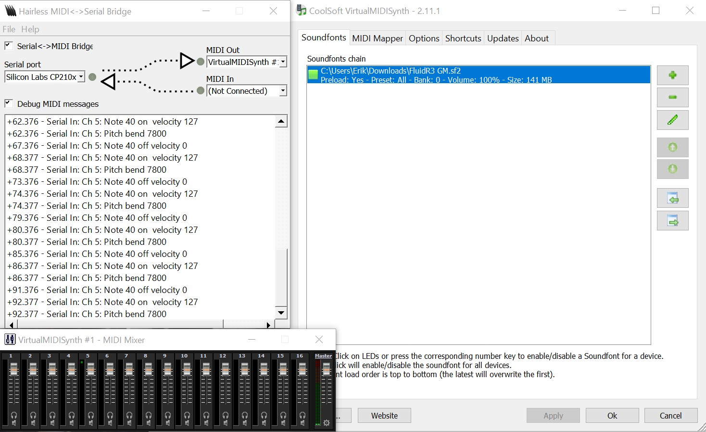

Since I have already played with the light sensors and the stepper motor, the main part of the project that I haven't explored is the Arduino to MIDI functionality. I looked at that a bit more this week. I have seen and remembered JuHye also mentioning this Hairless to MIDI input. I downloaded and played a little with that but haven't made much progress with the actual data transfer. I believe the data type I was sending was wrong.
Week 12:
I focused mainly on getting the hairless Midi to work. After downloading this virtual synth and reading about midi data types and the Arduino library "Arduino MIDI Library," I spent some time trying to get the huzzah to send data through the serial monitor. I first had to download a "SoundFont" which had a bunch of instruments programmed into it that the virtual synth will choose from depending on the number I sent through the serial. I struggled for a while because I have two monitors and I had the output set to my monitor speaker which was turned down. After figured out that problem, I was able to get it to work and I figured out by looking into the MIDI library to change the note I can use the line of code "MIDI.sendPitchBend(frequency, channel);" So, after figuring this out I essentially have all parts of my final project and I had to put everything together and create a case for it.

Week 13:
The past week I've been mainly working on the coding for the laser harp. I am just trying to put everything together at this point. I managed to code an automatic sensor calibrator that will record the light on startup or reset. Then I've been working mainly on getting the notes to have a small delay, because currently when they play it plays multiple notes in a second since the code is executing the noteOn line as fast as the code is running. I also have thought of a way to distinguish between each note. I realized I can use the mod function to get what beam is active since each beam is controlled through a millis() timer. For example, suppose I make 3 beams (so one laser flashes 3 times before returning to the original beam, making it appear like 3 separate beams). Let's say the beams are on for 1000 ms and off for a negligible amount of time. Then millis() mod 3000 will give me a number in the set [0,3). The numbers in the set [0, 1) would correspond with the time of the first beam, [1, 2) for the second beam, and [2,3) for the third beam. Therefore if the millis() mod 3000 has a reading of 1.6 when the light sensor goes over the threshold set by the automatic calibrator, it means beam 2 was broken and I can make that play a note associated with that beam. And, although not done, I've included what I have now which plays a note when the light sensor goes over the threshold set by the calibrate function. And below is my bill of materials:
Microcontroller
Analog Light Sensor
Laser
Stepper Motor
External Battery Pack
Computer with necessary software (ability to send midi data)
Small Mirror
Wires
Ultra Sonic Range Finder
Arduino Code: Playing Sound When Light Threshold is Broken
class Sound
{
int averageLight = 0;
int lightLevel;
int value;
int sensorPin;
int instrument;
int volume;
int channel;
int freq1;
int freq2;
int freq3;
int freq4;
int freq5;
int freq6;
int freq7;
int freq8;
int freq9;
int noteTime;
unsigned long resetMillis = 0;
public:
Sound(int sensorPin_input, int instrument_input, int volume_input, int channel_input, int timeNoteOn, int freq1_input, int freq2_input, int freq3_input, int freq4_input, int freq5_input, int freq6_input, int freq7_input, int freq8_input, int freq9_input) //Volume = 0-127
{
sensorPin = sensorPin_input;
instrument = instrument_input;
volume = volume_input;
channel = channel_input;
freq1 = freq1_input;
freq2 = freq2_input;
freq3 = freq3_input;
freq4 = freq4_input;
freq5 = freq5_input;
freq6 = freq6_input;
freq7 = freq7_input;
freq8 = freq8_input;
freq9 = freq9_input;
noteTime = timeNoteOn;
pinMode(sensorPin, INPUT);
}
void Calibrate()
{
if (millis()<15000) {
for(int i; i<100; i++)
{
averageLight = averageLight + analogRead(sensorPin);
delay(10);
}
lightLevel = averageLight/100;
// Serial.print(lightLevel);
// Serial.print("\t");
// Serial.print(averageLight);
// Serial.print("\t");
}
}
void Update()
{
unsigned long Millis = millis();
value = analogRead(sensorPin);
// Serial.println(value);
int playLightLevel = lightLevel + (lightLevel/4);
// Serial.println(playLightLevel);
if (value > playLightLevel && Millis - resetMillis >= noteTime)
{
MIDI.sendNoteOn(instrument, volume, channel);
MIDI.sendPitchBend(freq1, channel);
resetMillis = Millis;
}
else
{
MIDI.sendNoteOff(instrument, 0, channel);
}
}
};
Week 14:
My final project has been taking a little longer than hoped. I thought it would be pretty simple to integrate all the parts but I found that I am very bad at stepper motor control. After reaching out and receiving some starter code from Nathan I had something that would rotate one way too many how many beams as desired. But, it wasn't rotating back and forth to help reach persistence of vision. After editing the code in a way I thought would help spin the motor in both directions, I was stumped when after behaving for a short amount of time the motor just spun in circles. I just thought I was doing something wrong but after reaching out to Nathan again it seemed as if my code was okay. I hopped into office hours to see if we could get to the bottom of this and we found that to spin backward, the function "setSpeed" must be negative. In hindsight, this still isn't clear as to why this should be this way. Speed should only be speed and not direction. It would be more clear if the function was called setVelocity since velocity consists of both speed and direction. Regardless, it works now and I found that if I turn the time the laser is on to 5 milliseconds, the beam still shows up and the speed I set does not matter. In the code below the speed is set to 25000 and it works reliably, but as soon as I change the delay to 10 milliseconds the motor skips a lot of steps. The delay must essentially be so negligible it is almost like the motor doesn't stop.
Arduino Code:
#include
const int stepPin = 12; // orange
const int dirPin = 27;
const int waitTime = 5; // how long to stay at each position (milliseconds)
const int numSegments = 8; // how many beams to create
const int stepsPerSegment = 10; // distance between beams
int prevMillis;
int n = 0;
int m = 0;
// Defining a stepper and the pins it will use
AccelStepper stepper(1, stepPin, dirPin);
void setup()
{
pinMode(13, OUTPUT);
stepper.setMaxSpeed(25000); // working for me at 9V when waitTime = 5
stepper.setAcceleration(50000);
Serial.begin(115200);
}
// The loop below runs the first "if" function until n hits the number of desired beams
// After that, it runs the second "if" function until m goes from the number of desired beams to 0
// Then, it repeats.
void loop()
{
if (n != numSegments) {
if (stepper.distanceToGo() == 0) {
digitalWrite(13, HIGH); // turn on laser
delay(waitTime);
digitalWrite(13, LOW); // turn off laser
n++;
if (n == numSegments) {
m = numSegments;
}
stepper.moveTo(n * stepsPerSegment);
stepper.setSpeed(25000); // this is needed to avoid accelerations
}
}
if (n == numSegments) {
if (stepper.distanceToGo() == 0) {
digitalWrite(13, HIGH); // turn on laser
delay(waitTime);
digitalWrite(13, LOW); // turn off laser
m--;
if (m == 0) {
n = 0;
}
stepper.moveTo(m * stepsPerSegment);
stepper.setSpeed(-25000); // this is needed to avoid accelerations
}
}
stepper.runSpeed();
Serial.println(stepper.currentPosition());
Serial.println(stepper.distanceToGo());
Serial.print("n= ");
Serial.println(n);
Serial.print("m= ");
Serial.println(m);
}